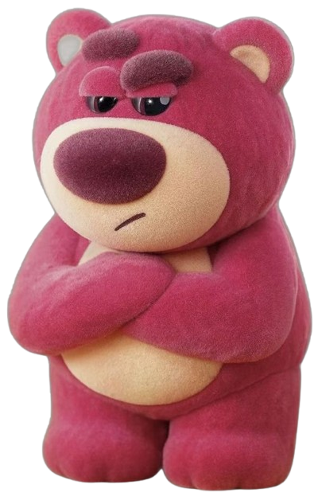

Hi Ataa Sayangg
Aku tau akhir-akhir ini aku banyak bikin hati kecil kamu sedih. Aku cuma minta waktu sebentar buat baca ini.
Aku tau akhir-akhir ini aku banyak bikin hati kecil kamu sedih. Aku cuma minta waktu sebentar buat baca ini.


Aku sadar mungkin aku terlalu sering bikin kamu kecewa. Aku ga akan membela diri. Aku cuma mau ngaku kalau aku memang salah.

Aku tahu kata maaf ga langsung menghilangkan rasa kecewa. Tapi aku benar-benar ingin berubah.
Hufft, Taa, maafin aku yaa. Kemarin aku sempet emosi ke kamu, ditambah lagi aku malah bikin kamu bete. Aku bener-bener nggak bermaksud buat bikin kamu ngerasa kayak gitu. Maafin aku, pleasee yaa, Taa. Aku nggak mau kita malah jadi gini, aku juga bingung harus ngomong apa lagi supaya kamu ngerti apa yang sebenernya aku rasain.
There is no one else but you, Taa. Walaupun kamu nyuruh aku buat find someone else besides you, tapi sumpah, nggak ada orang lain yang aku mau selain kamu. It's just you. Aku nggak mau nyari orang lain, karena dari awal yang aku mau ya kamu.
Aku tahu sekarang kamu lagi banyak kesibukan, dan aku bakal selalu support kamu dari sini. Apa pun yang kamu mau, apa pun yang lagi kamu usahain, aku bakal tetap dukung kamu. Aku pengen kamu fokus sama kesibukan kamu tanpa harus nambah pikiran gara-gara aku. Soal kamu yang ngerasa ngegantung aku, please don't worry about it, Taa. Itu bisa kita obrolin nanti, pelan-pelan aja. Aku nggak mau kamu makin pusing karena harus mikirin semuanya sekaligus.
But please, don't leave me, Taa. Kamu tahu nggak, kamu tuh mirip banget sama mamah, dan mungkin itu salah satu alasan kenapa aku bisa sesayang ini sama kamu. Ada sesuatu dari kamu yang bikin aku ngerasa nyaman, yang bikin aku susah buat lepas gitu aja. Aku bahkan nggak kebayang harus kehilangan kamu, apalagi kalau sampai kita beneran asing nantinya.
Maafin aku yaa, Taa, buat semua sikap aku yang mungkin bikin kamu capek, kecewa, atau ngerasa nggak nyaman. Aku tahu kata maaf aja nggak cukup buat ngebenerin semuanya, tapi aku bener-bener nyesel kalau sikap aku kemarin bikin kamu sakit hati.
Aku nggak minta semuanya langsung baik-baik aja sekarang. Aku cuma berharap kita masih punya kesempatan buat memperbaiki semuanya, belajar dari kesalahan kemarin, dan saling ngerti satu sama lain dengan lebih baik.
Let's try again, Taa. Kita coba lagi, pelan-pelan aja, tanpa harus buru-buru. Aku masih mau kamu, masih mau kita, dan masih pengen berusaha buat hubungan ini. Aku nggak janji bakal selalu sempurna, tapi aku mau belajar buat jadi lebih baik. Aku harap kamu masih mau kasih aku kesempatan yaa. I'm really sorry, Taa. 🥹🤍

Terima kasih sudah membaca semuanya. Semoga setelah ini kita bisa sama-sama memperbaiki semuanya.❤️